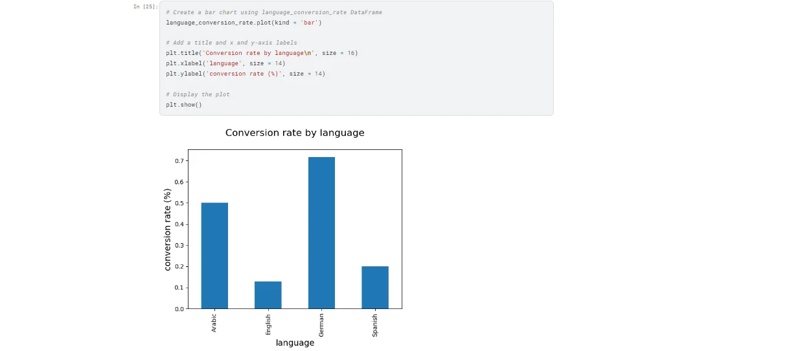

Marketing / Exploratory analysis
Marketing Campaign Analysis
Exploring conversion by language, channel and audience group with transparent, unique-user calculations.

Portfolio / training project · Original project artifacts · Python
01 / BUSINESS CHALLENGE
The question behind the work.
Campaign-level totals can hide differences in audience, language and channel. The denominator used to calculate conversion also changes how a chart should be interpreted.
02 / DATASET & OBJECTIVES
Start with the context.
Portfolio/exercise analysis presented on Kaggle, with related Python exercises in the author's public repository. The full input dataset was not available in those scripts, and the anonymous Kaggle page did not expose complete notebook output for independent reproduction.
Project objectives
- Calculate conversion using unique users rather than raw event counts.
- Compare language and channel groups.
- Explore personalization and A/B analysis exercises without treating them as proven causal business results.
03 / TECHNICAL APPROACH
How the pieces connect.
The published exercises group unique user counts, separate converted users, calculate conversion ratios and explore date, language, channel and age groups. Related code also examines personalization comparisons.
ARCHITECTURE / DATA MODEL
Campaign records → unique-user grouping → converted-user numerator and audience denominator → segment comparisons and plots. This is an analysis workflow, not a deployed attribution service.
Implementation
Python exercises use Pandas-style grouping and Matplotlib-style charts. Original visuals are preserved. The chart's axis says percent while plotted values may be ratios; numerical labels should be clarified before quoting them.
04 / VERIFIED OUTCOMES
What the work demonstrates.
The artifacts demonstrate segmentation and conversion-analysis work. They do not verify the old 40% marketing-spend saving, clustering implementation, or the effect of reallocating a real client's budget.
05 / SOURCE MATERIAL
Look closer.
Technologies
06 / VISUAL RESULTS
The original artifacts.
Genuine project visuals, retained from the original portfolio. Open any image to inspect it in full.


LET’S MAKE IT CLEARER
Let’s make your data useful.
Tell me what you’re working with, and what you need to understand.